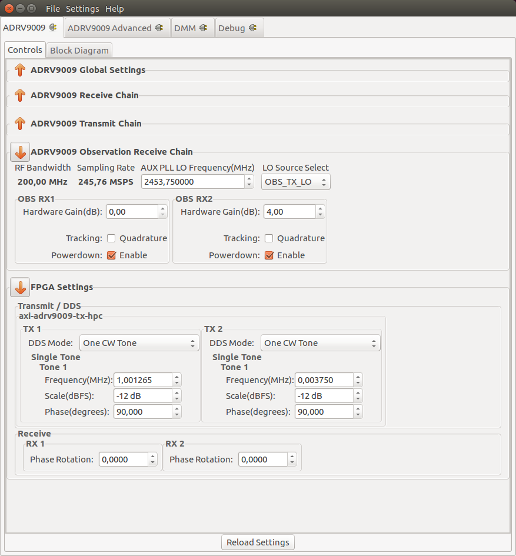
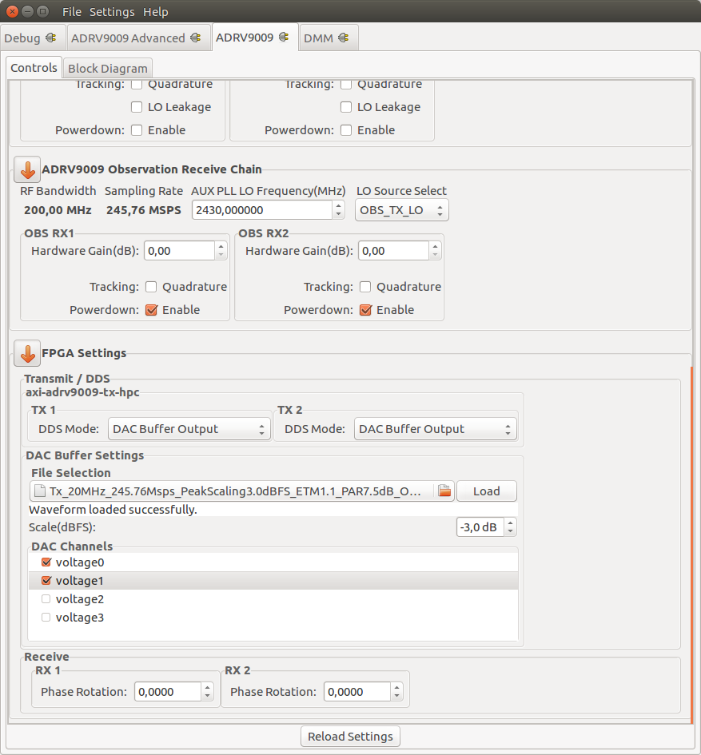
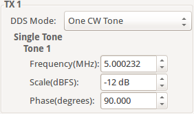
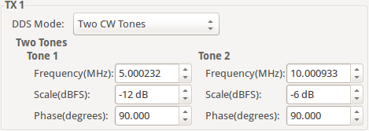
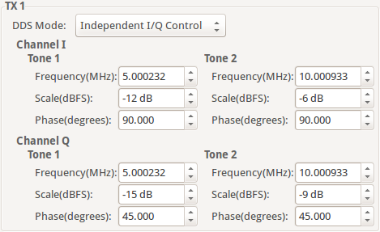
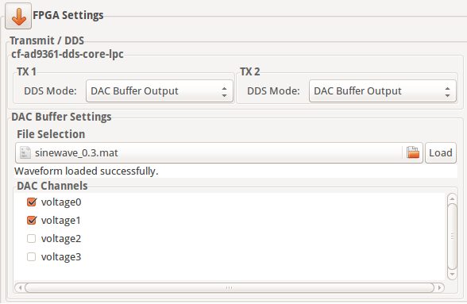

Standard Plugin
The ADRV9009 plugin works with the IIO Oscilloscope. You always use the latest version if possible. Changing any field will immediately write changes which have been made to the ADRV9009 settings to the hardware, and then read it back to make sure the setting is valid. If you want to set something that the GUI changes to a different number, that either means that GUI is rounding (sorry), or the hardware (either the ADRV9009 or the FPGA fabric) does not support that mode/precision.
If you want to go play with /sys/bus/iio/devices/.... and manipulate the
devices behind the back of the GUI, it’s still possible to see the settings by
clicking the “refresh” button at the bottom of the GUI.
Tip
This plugin supports multiple device instantiations. Typically used in a multichip design, where all devices and links are being synchronized. In order to support this mode, all IIO devices need unique names. Such as:
adrv9009-phy-d
adrv9009-phy-c
adrv9009-phy-b
adrv9009-phy-a [JESD204 FSM Top Device]
or:
adrv9009-phy-3
adrv9009-phy-2
adrv9009-phy-1
adrv9009-phy-0 [JESD204 FSM Top Device]
When used with the JESD204 finite state machine framework. The Top Device needs to be suffixed with a letter or numeral smaller than the slave devices. (a < b < c … or 0 < 1 < 2 …)
If you think the device has a setting that isn’t managed by this tab, check out the ADRV9009 Advanced Plugin for the IIO Oscilloscope.
The ADRV9009 view is divided in four sections:
Device Global Settings
Receive Chain
Transmit Chain
Observation Chain
FPGA Settings
Device Global Settings
Active ENSM: Displays the active mode of the Enable State Machine. Read More
ENSM Modes: Selects one of the available modes Read More
Profile configuration: Allows a Profile configuration to be loaded from a file. Read More
TRX LO Frequency(MHz): Selects the local oscillator frequency. Range 75MHz to 6GHz with low tuning granularity. Read More
Calibrations: Allows the user to reschedule a certain calibration Read More
Receive Chain
RF Bandwidth(MHz): Displays the Primary Signal Bandwidth of the current Profile. Read More
Sampling Rate(MSPS): Displays the RX Sample Rate of the current Profile. Read More
RX
Hardware Gain(dB): Controls the RX gain only in Manual Gain Control Mode (MGC). Read More
- RSSI(dB): Displays the received strength signal level.
Gain Control: Displays the active gain mode. Read More
Gain Control Modes: Selects one of the available modes: manual, hybrid and automatic. Read More
Gain Control Pin Mode: Enables Pin Control Mode Read More
Tracking Read More
Quadrature
HD2
Powerdown: Channel Enable/Powerdown Read More
Transmit Chain
RF Bandwidth(MHz): Displays the Primary Signal Bandwidth of the current Profile. Read More
Sampling Rate(MSPS): Displays the RX Sample Rate of the current Profile. Read More
PA Protection: Enables PA protection Read More
TX
Attenuation(dB): The TX attenuation/gain can be individually controlled for TX1 and TX2. The range is from 0 to -41.95 dB in programmable steps sizes. Read More
Attenuation Pin Control Mode: Enables Pin Control Mode Read More
Tracking Read More
Quadrature
LO Leakage
Powerdown: Channel Enable/Powerdown Read More
Observation Chain
RF Bandwidth(MHz): Displays the Primary Signal Bandwidth of the current Profile. Read More
Sampling Rate(MSPS): Displays the RX Sample Rate of the current Profile. Read More
AUX PLL LO Frequency(MHz): Controls the AUX PLL local oscillator frequency. Range 75MHz to 6GHz with low tuning granularity. Read More
Observation Path LO Source: Controls the LO source for the observation receiver Read More
RX
FPGA Settings
Transmit/DDS
The plugin provides several options on how the transmitted data is generated.
It is possible to either use the built-in two tone Direct Digital Synthesizer (DDS) to transmit a bi-tonal signal on channels I and Q of the DAC. Or it is possible to use the Direct Memory Access (DMA) facility to transmit custom data that you have stored in a file.
This can be achieved by selecting one of the following options listed by the DDS Mode:
One CW Tone
In One CW Tone mode one continuous wave (CW) tone will be outputted. The plugin displays the controls to set the Frequency, Amplitude and Phase for just one tone and makes sure that the amplitude of the other tone is set to 0. The resulting signal will be outputted on the Channel I of the DAC and the exact same signal but with a difference in phase of 90 degrees will be outputted on the Channel Q of the DAC.
Two CW Tone
In Two CW Tone mode two continuous wave (CW) tones will be outputted. The plugin displays the controls to set the frequencies F1 and F2, amplitudes A1 and A2, phases P1 and P2 for the two tones. The resulting signal will be outputted on the Channel I of the DAC and the exact same signal but with a difference in phase of 90 degrees will be outputted on the Channel Q of the DAC.
Independent I/Q Control
In Independent I/Q Control the plugin displays the controls to set the frequencies, amplitudes and phases for the two tones that will be outputted on channel I and additionally it allows for the two tones that will be outputted on channel Q of the DAC to be configured independently.
Note
The bi-tonal signal (T) is defined as the sum of two tones:
\(T(t) = A1 * sin(2 * p * F1 * t + P1) + A2 * sin(2 * p * F2 * t + P2)\),
where A-amplitude, F-frequency, P-phase of a tone.
DAC Buffer Output
The file selector under the File Selection section is used to locate and choose the desired data file. Under the DAC Channels section the enabled channels will be used to transmit the data stored in the file. To finalize the process, a click on the Load button is required.
Restrictions:
There are two types of files than can be loaded: .txt or .mat. The IIO-Oscilloscope comes with several data files that can be used. If you want to create your own data files please take a look at the Basic IQ Datafiles documentation first.
Due to hardware limitation only specific combinations of enabled channels are possible. You can enable a total of 1, 2, 4, etc. channels. If 1 channel is enabled then it can be any of them. If two channels are enabled then channels 0, 1 or channels 2, 3 can be enabled and so on.
Disable
In this mode both DDS and DMA are disabled causing the DAC channels to stop transmitting any data.
Note
Upon pressing Reload Settings button the values will be reloaded with the corresponding driver values. Useful in scenarios where the diver values get changed outside this plugin (e.g with the use of Debug plugin) and a refresh on plugin’s values is needed.
Attention
Some plugin values will be rounded to the nearest value supported by the hardware.